aqorin.rcuadrado.es · npm i -g @aqorin/cli
◈ aqorin │ Runs › #1 quick-change ╭─ Flow ─── Activity · [Flow] · Trace · Raw ─╮ │ succeeded · 0:50 │ │ │ │ ╭─────────────╮ ╭─────────────╮ │ │ │ ✓ implement │ │ ✓ review │ │ │ │ developer │ ─▶ │ reviewer │─╮ │ │ │ done │ │ done │ │ │ │ │ 0:27 │ │ 0:21 │ │ │ │ ╰─────────────╯ ╰─────────────╯ │ │ │ ▲ │ │ │ │ ╰───── changes ────╯ │ │ │ │ │ │ ╭─────────────╮ │ │ │ │ ✓ done │ │ │ │ │ succeeded │◀╯ │ │ │ │ │ │ │ │ │ │ ╰─────────────╯ │ │ │ │ ✓ done ◐ running ○ queued │ ╰────────────────────────────────────────────╯